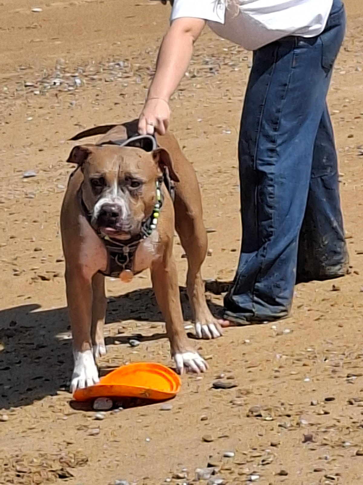
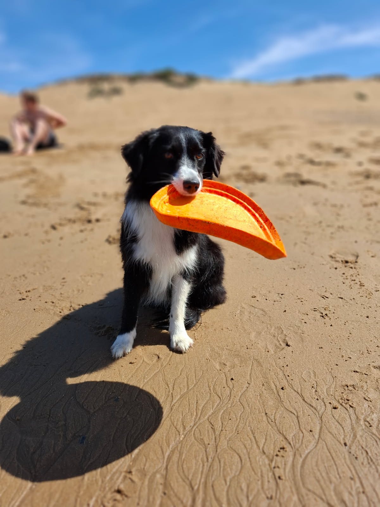
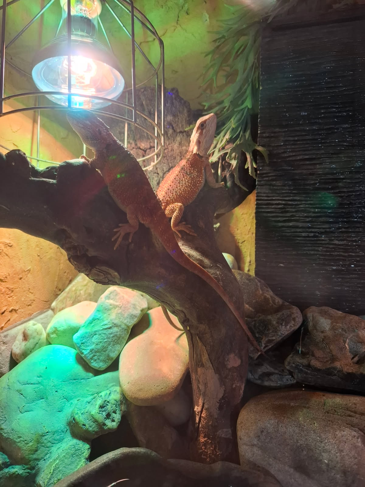
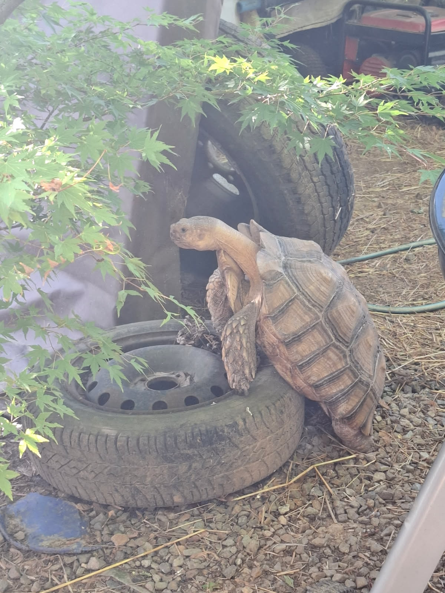

Je suis quelqu'un de curieux, motivé, rigoureux. Je m'adapte facilement et j'apprécie le travail en équipe.
J'ai obtenu mon baccalauréat STI2D en 2018 au lycée Leonard de Vinci.
12/12/2020 : j'ai effectué de l'intérim à partir de cette période. J'ai travaillé dans la maçonnerie, l'électricité ainsi que la métallurgie.
12/12/2021 : j'ai commencé le métier à la SAM de Montereau. Ce poste me demandait de gérer une production, de travailler en équipe (nous étions en rotation) et d'évoluer dans des conditions difficiles. Manipuler des bobines sortant à 1200 °C avec un bruit constant, parfois avec des risques (gants qui prennent feu, accrochages aux machines) m'a appris à travailler sous pression et dans des environnements exigeants.
| Sport | Vélo | Sport de combat | Natation | Musculation |
|---|---|---|---|---|
| Voyage | ALLEMAGNE | EGYPTE | ESPAGNE | Montagne |
| Animaux |  |
 |
 |
 |
Après l'obtention de mon baccalauréat STI2D avec mention assez bien, j'ai choisi de travailler deux années à la SAM de Montereau. À cette époque, je ne me tournais pas vers les études, car ma passion pour le sport occupait toute mon énergie. Un problème de santé m'a ensuite conduit à une longue période de rééducation, dont trois années en fauteuil roulant. Cette étape difficile m'a poussé à prendre du recul et m'a permis de me tourner vers l'informatique, un univers que je ne connaissais pas encore mais qui a rapidement éveillé ma curiosité. J'ai commencé à me former seul, d'abord en découvrant le HTML, le CSS et le Java, puis en me spécialisant dans le Python. Au fil du temps, j'ai réalisé plusieurs projets personnels, comme une calculatrice multiplateforme avec Kivy, et j'apprends aujourd'hui à utiliser Flask pour intégrer des API et créer des applications web. Les intelligences artificielles comme ChatGPT ou GenSpark m'accompagnent également dans ce parcours, non seulement comme des outils, mais comme de véritables soutiens dans mon apprentissage quotidien. À l'origine, mon souhait d'aider les autres m'avait orienté vers une carrière dans les forces de l'ordre. Aujourd'hui, cette volonté reste la même, mais je souhaite à l'avenir l'exprimer à travers l'informatique, en mettant mes compétences au service de projets technologiques, sociaux et médicaux. Je me suis rendu compte que non seulement les personnes sur le terrain, comme les pompiers ou les policiers, sauvent des vies, mais aussi les scientifiques et les ingénieurs en contribuant à améliorer le quotidien de chacun.
| Station | Vélos dispo | Mécaniques | Électriques |
|---|